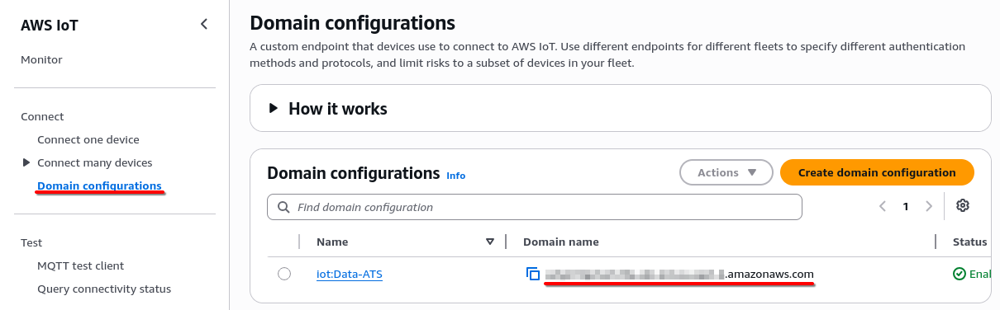
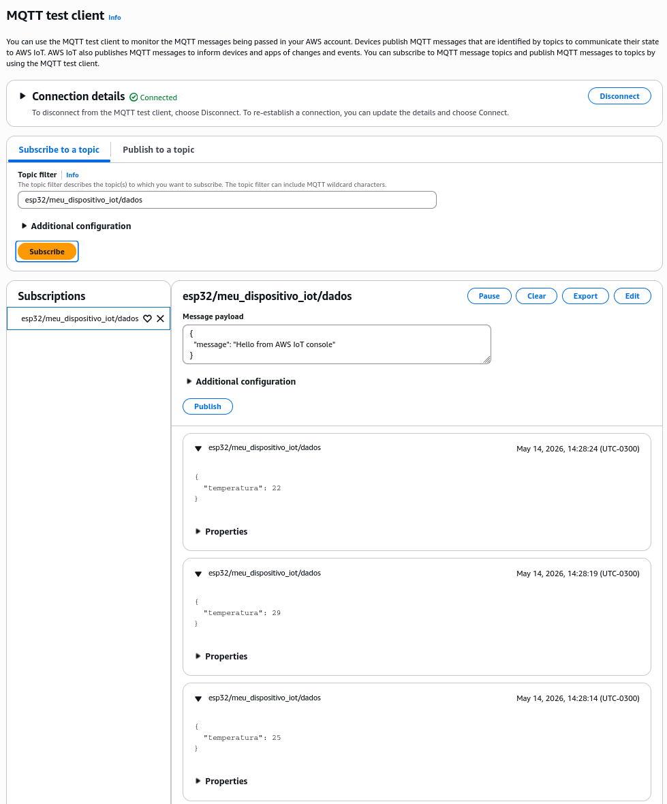

Configurando um dispositivo
Configurando um dispositivo Simulado
Agora que já configuramos uma Thing no AWS IoT Core, vamos configurar um dispositivo simulado para modelo de estudo. Para tal iremos criar um script Python.
O primeiro passo será criar nosso Virtual Environment abra um terminal, crie uma pasta para seu projeto e execute o seguinte comando.
python -m venv venv
# ou
python3 -m venv venv
Feito isso, precisamos ativá-lo. Utilize o seguinte:
source venv/bin/activate # No linux ou mac
# No Windows:
venv/bin/activate.bat
# OU
venv/bin/activate.ps1
Com isso garantimos que poderemos instalar os módulos necessários, sem que outros projetos sejam impactados.
Precisamos instalar o SDK para Python da AWS IoT, execute o seguinte comando:
pip install awsiosdk
# OU
python -m pip install awsiotsdk
# OU
python3 -m pip install awsiotsdk
Agora estmaos prontos para criar nosso script. Começando com os imports:
from time import sleep
from json import dumps
from random import randrange
from sys import exit
from awscrt import mqtt
from awsiot import mqtt_connection_builder
- Utilizaremos a função
sleeppara aguardar alguns segundos entre publicações MQTT seguidas; -
json dumpsserá utilizada para configurar o payload a ser enviado; - Para simular a leitura de um sensor utilizaremos a
randrange - E por fim as funções do AWS IoT SDK para criar a conexão e enviar os dados.
Agora serão necessários os arquivos de chave, certificados e identificação da AWS que fizemos download quando criamos nosso thing. Coloque os na mesma pasta que seu script irá executar.
Isso feito, podemos criar as variáveis que irão guardar os nomes (ou paths) desses arquivos.
# Arquivos necessários para a conexão.
CERTIFICADO = "thing-certificate.pem.crt"
CHAVE_PRIVADA = "thing_chave-private.pem.key"
ROOT = "thing-AmazonRootCA1.pem"
Renomeie os arquivos ou ajuste as constantes para refletir o nome de seus arquivos.
Precisamos agora das informações de texto que iremos utilizar para criar a publicação MQTT.
-
ENDPOINTesse é a URL que a Amazon disponibiliza para conexão ao IoT Hub. Para encontrá-la entre em seu Console da AWS, em IoT Hub, no menu esquerdo, procure por Connect > Domain configurations ao menos um deverá estar listado. O Domain Name é nosso endpoint

-
CLIENT_IDesse é o nome que definimos para a Thing que foi criada. (ex. meu_dipositivo_iot) -
TOPICé o tópico que definimos que esse dispositivo irá se comunicar. Atenção que ele está relacionado pela política que criamos, o Resource da política ficou algo comoarn:aws:iot:<Sua Região>:<Seu User ID>:topic/esp32/${iot:Connection.Thing.ThingName}/*traduzindo, precisamos que o tópico que iremos publicar seja no formatoesp32/meu_dipositivo_iot/<Qualquer coisa>
# InformaçÕes da conexão.
ENDPOINT = "<seu endpoint>.amazonaws.com"
CLIENT_ID = "meu_dipositivo_iot"
TOPIC = f"esp32/{CLIENT_ID}/dados"
Com tudo definido, vamos criar o objeto de conexão
mqtt_con = mqtt_connection_builder.mtls_from_path(
cert_filepath = CERTIFICADO,
pri_key_filepath = CHAVE_PRIVADA,
ca_filepath = ROOT,
endpoint = ENDPOINT,
client_id = CLIENT_ID,
pkcs11_lib = None,
clean_session = False,
keep_alive_secs = 30,
# Caso seja necessários fazer a conexão via HTTPS remova os comentários
# port = 443,
# alpn_protocols = ["x-amzn-mqtt-ca"],
# prioritize_psk_cipher_suites = False,
)
Iniciamos a conexão:
print(f"Conectando ao endpoint {ENDPOINT}...")
try:
con_future = mqtt_con.connect()
con_future.result()
print("Conectado!\n....Iniciando Simulação")
except Exception as e:
print(f"Falha na conexão: {e}")
exit()
No código acima tentamos nos conectar com nosso endpoint. Chamamos de Future pois essa é uma operação assíncrona, pense nesse future como uma “promessa”: quando eu terminar esse processo retorno seu dado.
Então com o con_future.result() forçamos esse código rodar de forma síncrona.
E caso ele não consiga se conectar, o nosso future irá enviar um erro(throw)
Colocamos tudo isso dentro de um try-except para caso a conexão seja recusada,
possamos tratá-la
E enfim nossa simulação e publicação para o MQTT:
while true:
temp = randrange(22, 32) # "Simulação da leitura de temperatura
payload = { "temperatura": temp }
print(f"Publicando em {TOPIC}: \n\t {payload}"
mqtt_con.publish(
topic=TOPIC,
payload=dumps(payload),
qos=mqtt.QoS.AT_LEAST_ONCE
)
sleep(5)
Código Completo:
from time import sleep
from json import dumps
from random import randrange
from awscrt import mqtt
from awsiot import mqtt_connection_builder
# Connection details
ENDPOINT = "a2yz72p2ve125a-ats.iot.us-east-2.amazonaws.com"
CLIENT_ID = "meu_dispositivo_iot"
CERTIFICADO = "mdi-certificate.pem.crt"
CHAVE_PRIVADA = "mdi-private.pem.key"
ROOT = "mdi_AmazonRootCA1.pem"
TOPIC = f"esp32/{CLIENT_ID}/dados"
mqtt_con = mqtt_connection_builder.mtls_from_path(
cert_filepath = CERTIFICADO,
pri_key_filepath = CHAVE_PRIVADA,
ca_filepath = ROOT,
endpoint = ENDPOINT,
client_id = CLIENT_ID,
pkcs11_lib = None,
clean_session = False,
keep_alive_secs = 30,
# Caso seja necessários fazer a conexão via HTTPS remova os comentários
# port = 443,
# alpn_protocols = ["x-amzn-mqtt-ca"],
# prioritize_psk_cipher_suites = False,
)
print(f"Conectando ao endpoint {ENDPOINT}...")
try:
con_future = mqtt_con.connect()
con_future.result()
print("Conectado!\n....Iniciando Simulação")
except Exception as e:
print(f"Falha na conexão: {e}")
exit()
while True:
temp = randrange(22, 32) # "Simulação da leitura de temperatura
payload = { "temperatura": temp }
print(f"Publicando em {TOPIC}: \n\t {payload}")
mqtt_con.publish(
topic=TOPIC,
payload=dumps(payload),
qos=mqtt.QoS.AT_LEAST_ONCE
)
sleep(5)
Tudo estando correto, ao executar o script você estará publicando no server MQTT do seu IoT Core.
Para verificar, podemos utilizar o MQTT Test Client disponível no console do IoT Core.

Configurando uma ESP32
WIP